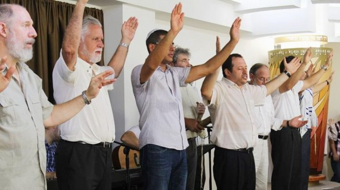
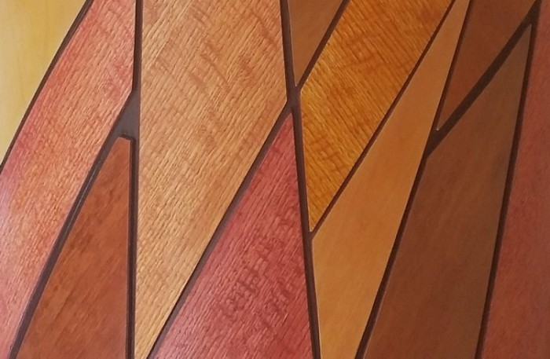
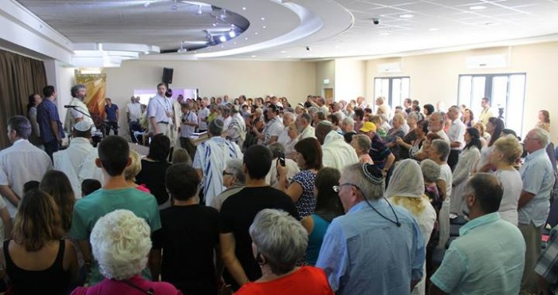
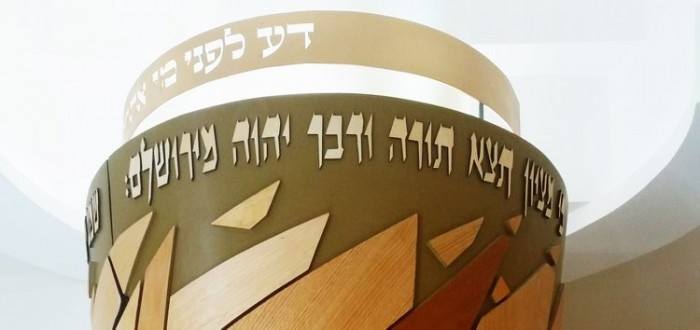
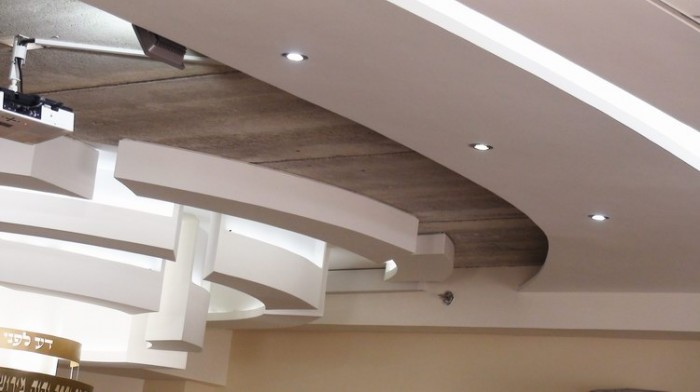
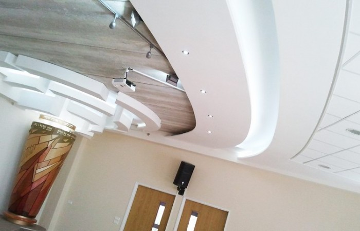
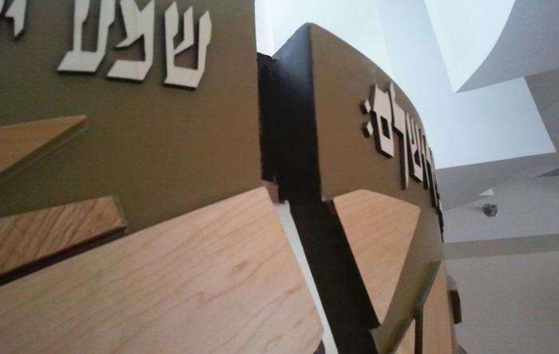
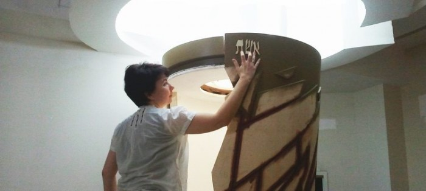

Know BEFORE WHOM You Stand. The Pillar of Fire
The first thing that attracts your attention when you enter the sanctuary of this synagogue is a pillar of fire – the sign of Shavuot. It shines as a flash of great light upon two covenants. The Sinai covenant made with our forefathers, when they stood at the foot of the mountain and the whole mountain trembled violently. And the sound of shofar grew louder and louder. Mount Sinai was covered with smoke, because the LORD descended on it in fire. Then Moses spoke and the voice of God answered him. (Ex. 19:16-20). And another covenant - a new covenant made with the house of Israel and with the house of Judah. (Jer.31:31).
Composer Daniel Kruglov


This fire came upon the disciples of the Messiah in Jerusalem when the day of Shavuot came and they were all together in one place. Then it spread all over the world filling the hearts of people with the same fire and stamping the words of Torah in them.

“DA LIPNEI MI ATAH OMED!” (Hebr), - Know Before Whom You Stand!
In many synagogues this statement is displayed on the Aron ha-Kodesh (Hebr) the holy ark in which the Torah scrolls are kept. The same statement is displayed above the Aron Ha- Kodesh in messianic congregation Shavei Zion in Haifa, Israel. It is built according to a very special and unique design.

The Torah scrolls are placed in the heart of the ark, made in the image of the pillar of fire.In every city from the earliest times the Torah is read in the synagogues on every Sabbath. (Acts 15:21)



Photo of Ephraim & Ivetta KalishMore about the design concept and symbols of the Aron ha-Kodesh read in the article by Ivetta Kalish “Shavey Tzion Messianic Sinagogue. Design Explanation.”